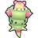

Most of Aymlis Park is incorporated as part of Wild Zone 12. This Wild Zone only appears after completing Main Mission 14: Reaching Rank E.
Access to:
North: Bleu Sector 3
West: Bleu Sector 5
South: Bleu Sector 7
East: Vernal Avenue
Places of interest:
Vernal Pokémon Center
| Pokémon | Level | Area | Circumstances | |
|---|---|---|---|---|
|
 |
Rogue Mega Slowbro | 34 | On the rock in the water | Required Rogue Mega Evolution battle during Main Mission 11: A Rogue Mega Slowbro. This is a Multi Battle with Taunie/Urbain. Taunie/Urbain uses the 2nd stage of the two starters the player did not pick, both at level 25, and a level 26 Manectric. Taunie/Urbain leads with the starter whose type is weak to the player's. |
| Item | Main Mission | Location | Details |
|---|---|---|---|
| Slowbronite | Main Mission 11: A Rogue Mega Slowbro | Obtained from the Rogue Mega Slowbro after defeating it |
| Item | Location | Details |
|---|---|---|
| TM026 Energy Ball | On the southwestern part of the roof of the complex surrounding the park | Requires Roto-Glide. |
| HP Up | On the southeastern part of the roof of the complex surrounding the park | Requires Roto-Glide. |
| Dive Ball | On the lower roof on the eastern part of the complex surrounding the park | Requires Roto-Glide. |
| Colorful Screw | On the roof of the small building west of the park | Requires Roto-Glide. |
The player will receive one Premier Ball for every 10 Poké Balls of any type purchased.
| Item | Price | Notes |
|---|---|---|
| Poké Ball | 100 | |
| Great Ball | 300 | Only after speaking to Emma at Looker Bureau during Main Mission 05: The City in the Shadow of Prism Tower. |
| Ultra Ball | 600 | Only after completing Main Mission 14: Reaching Rank E. |
| Potion | 150 | |
| Super Potion | 400 | |
| Hyper Potion | 600 | Only after completing Main Mission 09: Chase That Mysterious Pokémon!. |
| Max Potion | 1,200 | Only after completing Main Mission 14: Reaching Rank E. |
| Full Restore | 1,500 | Only after completing Main Mission 19: Reaching Rank D. |
| Revive | 800 | |
| Antidote | 100 | |
| Paralyze Heal | 100 | |
| Burn Heal | 100 | |
| Ice Heal | 100 | |
| Awakening | 100 | |
| Full Heal | 200 | Only after completing Main Mission 14: Reaching Rank E. |
| HP Up | 5,000 | Only after completing Main Mission 24: Reaching Rank C. |
| Protein | 5,000 | Only after completing Main Mission 24: Reaching Rank C. |
| Iron | 5,000 | Only after completing Main Mission 24: Reaching Rank C. |
| Calcium | 5,000 | Only after completing Main Mission 24: Reaching Rank C. |
| Zinc | 5,000 | Only after completing Main Mission 24: Reaching Rank C. |
| Carbos | 5,000 | Only after completing Main Mission 24: Reaching Rank C. |
The following Side Missions can be obtained in Aymlis Park.
| Side Mission | Giver | Location | Unlock requirement | Rewards |
|---|---|---|---|---|
| Side Mission 016: The Budew Show | Jardin | In the Vernal Pokémon Center | Start Main Mission 07: Reaching Rank W | 10,000 currency (4,200 after subtracting the 5,800 entry fee) 1x Miracle Seed |